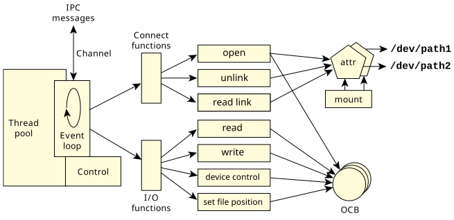

Now that we've introduced the basics—how the client looks at the world, how the resource manager looks at the world, and an overview of the two cooperating layers in the library, it's time to focus on the details.
In this section, we'll take a look at the following topics:
Keep in mind the following big picture,
which contains almost
everything related to a resource manager:
